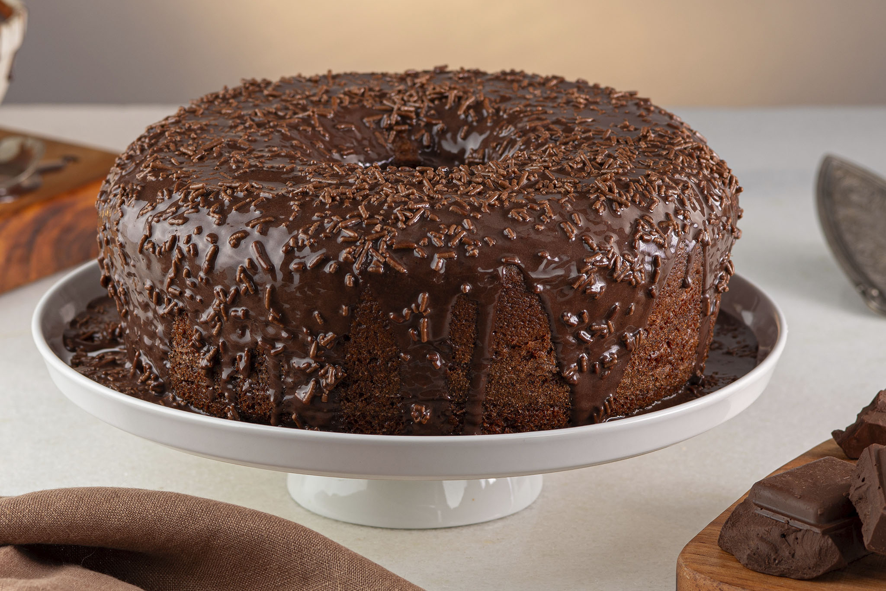

Bolo de Chocolate

Um bolo macio para quem ama chocolate
Ingredientes
- 3 ovos
- 2 xícaras de farinha de trigo
- 1 xícara de açúcar
- 1 xícara de chocolate em pó
- 1 xícara de leite
- 1/2 xícara de óleo
- 1 colher de sopa de fermento em pó
- Margarina para untar a forma
Modo de preparo
- Coloque os ovos, o açúcar e o óleo em uma tigela
- Misture bem os ingredientes
- Acrescente o leite e o chocolate em pó
- Adicione a farinha de trigo aos poucos
- Misture até formar uma massa homogênea
- Acrescente o fermento por último
- Unte uma forma com margarina
- Coloque a massa na forma
-
Leve ao forno por aproximadamente 40 minutos a 180°
Dica: você pode adicionar uma cobertura de chocolate depois.